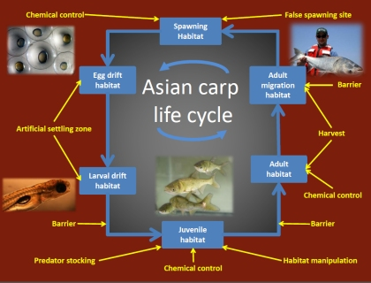

Assessing life history traits of Asian carp in established and emerging populations to identify and characterize vulnerabilities that can be exploited for control

Novel Asian carp control methods are currently in development, however, many of these approaches cannot be implemented in a safe and effective manner without additional information on Asian carp life-cycle traits. For example, chemical control agents that target Asian carp will need to be deployed in locations and in a manner such that Asian carp take up these chemicals, but native species do not. Similarly, the effectiveness of other novel control approaches such as habitat manipulation or predator stocking cannot be estimated without better understanding Asian carp habitat use and vulnerability to predators. For example, little is known about the environmental conditions necessary for successful recruitment of juvenile Asian carps to adult age classes. Restrictive conditions might include the suitability of habitats for adult spawning or for juvenile development, survival and growth. Manipulating these critical habitats or targeting them with chemicals or predators could lead to reduced Asian carp recruitment. To control and prevent the spread of Asian carp in North American, these life history traits need to be understood not only in systems where Asian carp are well established, but also at invasion fronts where their numbers are still low.
To achieve a better understanding of seasonal habitats and migratory behaviors of Asian carp, we will conduct studies using telemetry, sonar and conventional fish sampling to determine 1) if, when, and where Asian carp congregate, 2) habitat overlap between Asian carp and native fishes, especially native filter-feeding fishes and potential predators, and 3) the suitability of large rivers and tributaries for spawning by Asian carp. We will also assess feeding behaviors by sampling food particles from areas with telemetry-tagged fish, at random sites and in Asian carp stomachs. Food from these sources will be characterized with a particle analyzer, genetics and microscopy to determine preferences and limitations in regards to particle size, shape, and algae and zooplankton composition. To determine environmental conditions that might affect recruitment of Asian carp, we will assess larval and juvenile Asian carp habitat needs and potential predators by sampling with electrofishing boats, nets, and remote sensing (use of pit-tags and telemetry) in managed and natural flood-plain wetlands. Stomach samples from potential predators will be analyzed with microscopy and genetics to determine whether they ingest Asian carp. Potential predators identified from field studies will be evaluated in controlled experiments to assess relative predator effectiveness and juvenile Asian carp habitat selection under various environmental conditions of predator density, depth, turbidity, and vegetation abundance.
Information from these studies will fill gaps in and refine existing knowledge on the life cycle of Asian carps in North America that will speed the development of safe and effective control measures in systems with established and emerging Asian carp populations. The control measures developed with this new information will target specific life stages of Asian carp and include species-specific chemical controls, selective removal by fishing, barriers at strategic locations, lethal egg and larvae settling zones, artificial (false) spawning sites near existing egg and larvae settling zones, predator stocking, and other habitat manipulations detrimental to recruitment.
Findings will be reported as the project progresses.
Brent Knights, bknights@usgs.gov
Upper Midwest Environmental Sciences Center
608 781-6332
Duane Chapman, dchapman@usgs.gov
Columbia Environmental Research Center
573-876-1866